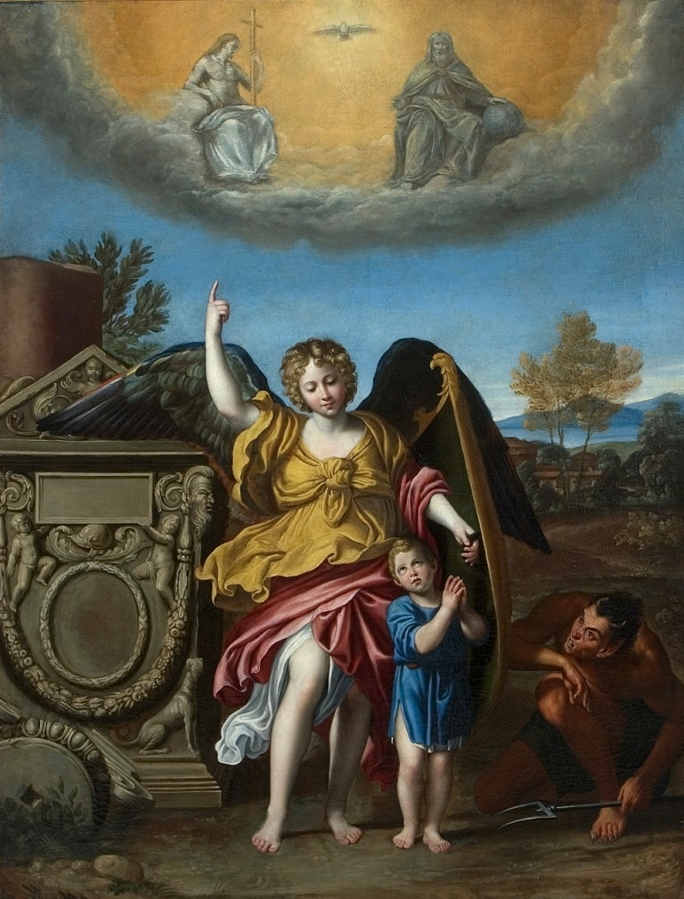
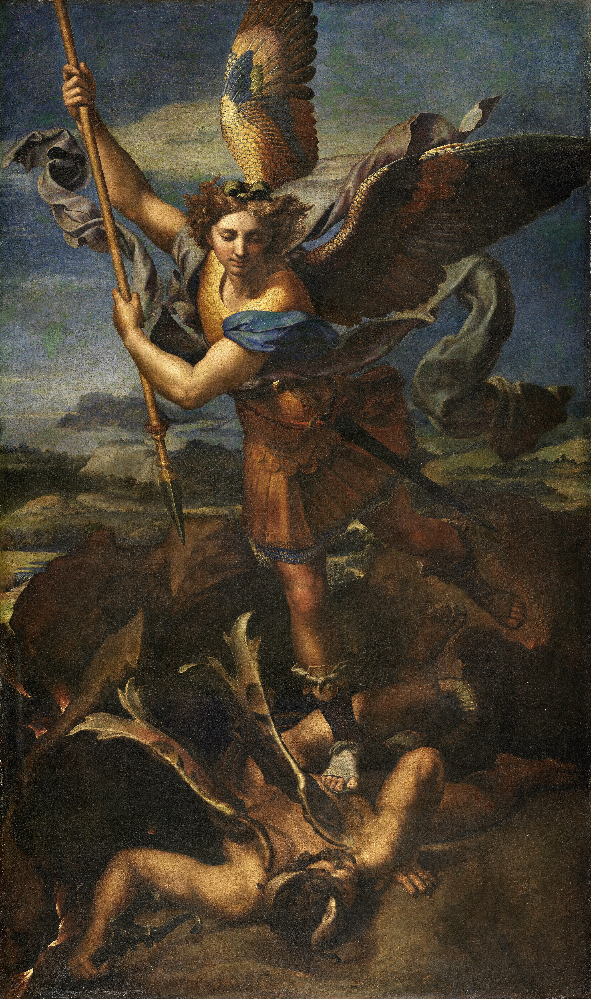
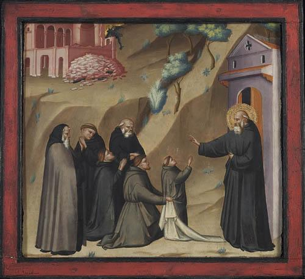
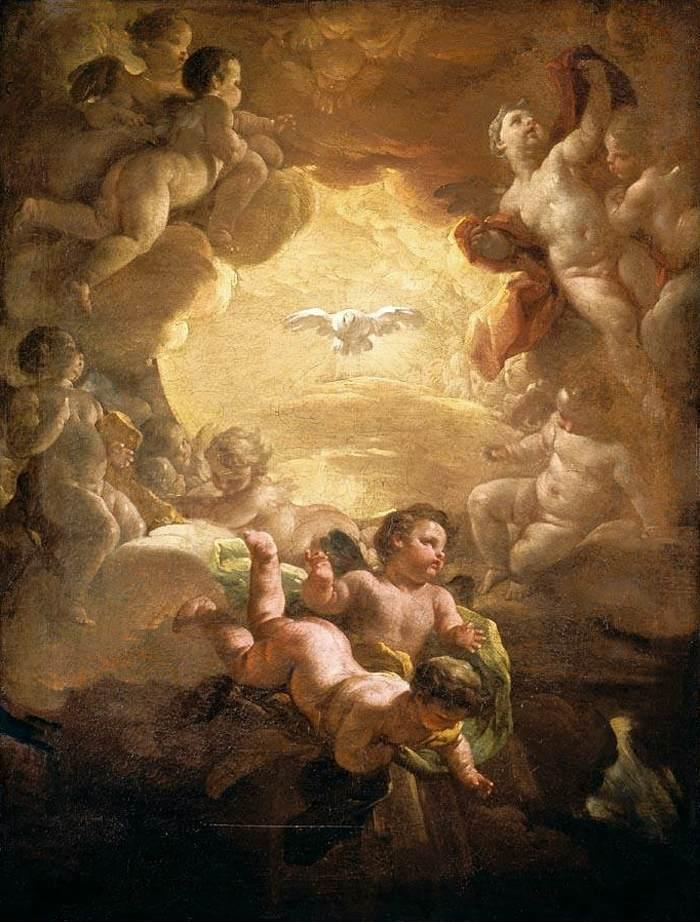
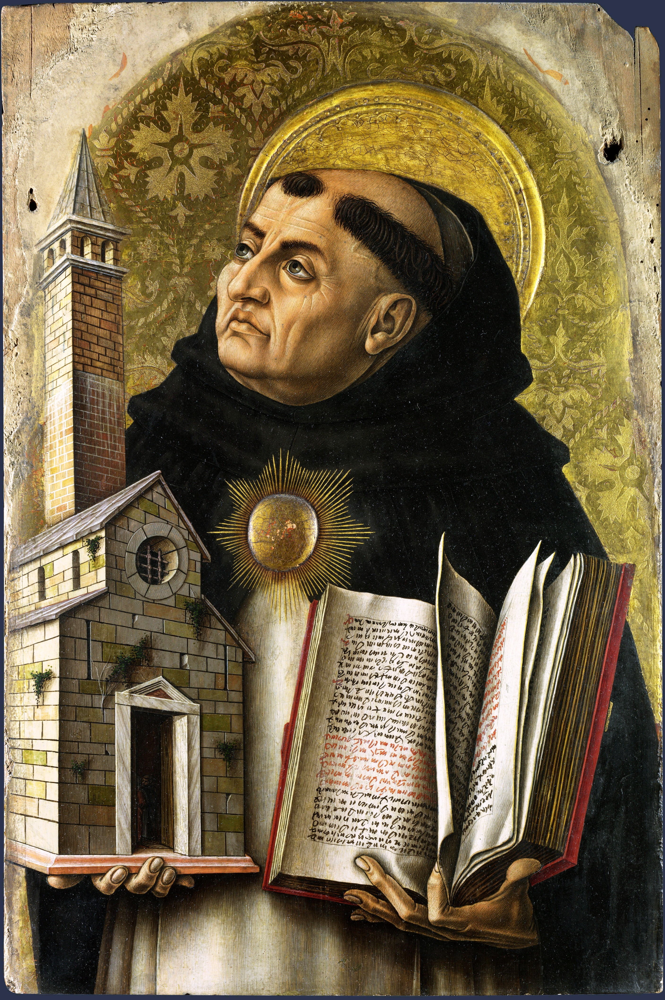
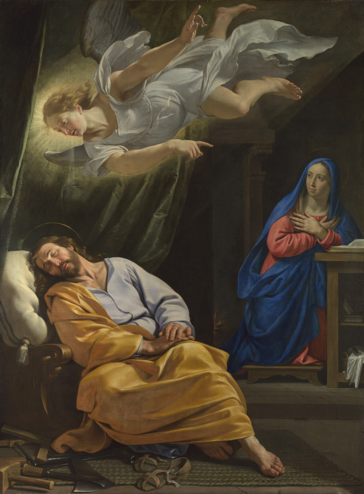
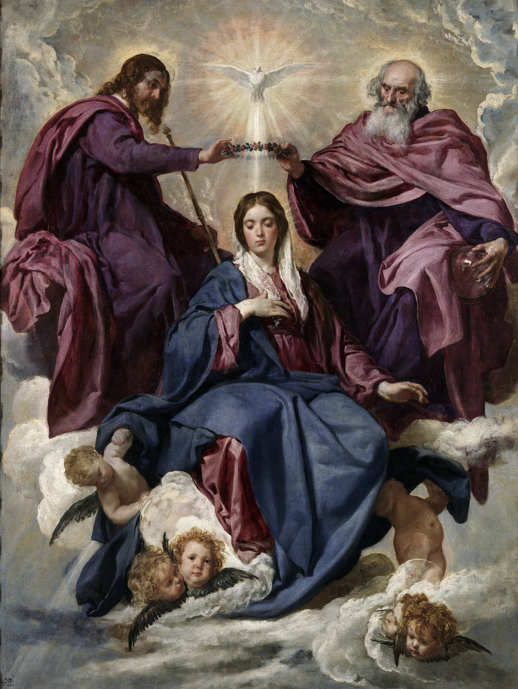

Quando criança, minhas primeiras lembranças com a Fé era orar, todos os dias, antes de dormir, junto de meus pais. Lembro-me de sempre pedir para o anjo da guarda menor ficar atrás, e o maior a frente, para assustar o bicho-papão. Possivelmente o primeiro contato e a forma pela qual descobri que existe um Criador, e seres que intercedem por nós. É uma devoção que surgiu de forma muito espontânea e natural, sem existir um evento relevante ou um motivo especial.
Anjos são seres espirituais, mensageiros. Todos nós temos um anjo da guarda, existem até mesmo anjos de matrimônios. Podemos pedir para que conversem entre si, que levem mensagens nossas para outros anjos, que abram portas e diálogos mais amigáveis entre nós, humanos. Intercedem por nós nos ceús, e podem levar nossos pedidos mal elaborados para Cristo, de forma mais limpa.

Todo jovem tem sua fase rebelde, e na minha decidi me entupir de tatuagem. A segunda delas, e também a maior, foi de São Miguel Arcanjo. Confesso que na época não conhecia bem os méritos deste Santo, mas pouco a pouco comecei a procurar mais e vi que ele se encaixa perfeitamente comigo, no sentido de batalhar pela fé e pela verdade. Pouco a pouco passei a ter mais ligação com o Arcanjo, se tornando o primeiro Santo a quem me identifiquei como devoto.
Hoje, sempre antes de qualquer grande desafio, peço por sua poderosa intercessão, como príncipe da milícia celeste, anseiando fazer parte de seu contingente de guerreiros. Por vezes o caminho se torna extremamente difícil, alguma tentação maior ou provação exigente aparece adiante, e recorre ao Arcanjo São Miguel para me dar força e coragem nessas batalhas. Ele também me faz lembrar que não tenho posição para julgar ninguém: em Judas 1:9 vemos Miguel expulsando Lúcifer do paraíso, e nesse evento, o Arcanjo não julga satanás, apesar de ter Graça e estar combatendo um mal repugnante. Miguel apela à autoridade de Deus e deixa na mão do Justo Juiz todo julgamento, reservando para si humildade e reverência.

O meu primeiro terço próprio, usado para rezar terços e rosários foi de São Bento. Talvez seja a relação mais fria que tenho entre todos os Santos de minha devoção, mas tem sua parte importante na minha vida, pois foi por meio de seu terço que eu aprendi a rezar todos os mistérios do rosário sem consultar colas, e por ter me acompanhado em vários eventos sobrenaturais.
Recorri à São Bento inúmeras vezes para proteger do mal quando este era inevitável, e para prosseguir no dia a dia seguro que tudo aquilo que é feito nas sombras seja revelado às luzes do Senhor, quando for a hora. Também me lembra de dar graças ao Senhor diariamente pelos meus alimentos e pela vida que levo, conciliando à regra de São Bento: ora et labora (reza e trabalha), relembrando que podemos santificar todos os dias de nossas vidas.

Se não fosse pelo Espírito Santo, a terceira Pessoa da Santíssima Trindade, dificilmente hoje eu seria católico. Fato é que por meio dele o fogo e o amor por Cristo foi se aumentando e crescendo no meu coração. Mesmo quando estive fora do Estado de Graça, em pecado mortal, sempre senti a presença do Espírito Santo, o Paráclito Consolador que me dava forças para confiar e seguir, com esperanças do dia em que poderíamos ser unidos em um só corpo, pela Eucaristia. Em muitas das missas de cura e libertação eu estive em sua presença, aprendi a clamar por Ele e vivenciar as boas obras que ele nos traz, pela Graça e Santificação. Tive um episódio muito marcante no retiro do Crisma também, muito importante para meu desapego material.
A oração do 'Vinde Espírito Santo' busco fazer todos os dias, de forma formal ou não (apenas clamando ao Paráclito e entregando a Ele o meu dia), buscando chamar a Santíssima Trindade para viver mais este dia comigo, santificando a mim e minhas obras cotidianas. Sei que por meio dele eu busco sempre a reconciliação com o Senhor, por meio do corpo e sangue de Cristo, em busca da vida eterna junto de todos os outros Santos.

Uma história longa, mas que será resumida: do dia para noite decidi assumir Santo Tomás como um de meus Santos de devoção, por ser 'o Santo dos estudantes'. Noutro dia, havia doado para a Santa Igreja metade do dinheiro que tinha na minha conta (eu tinha R$10) e fiquei com a outra metade para mim. Na outra semana, ainda com meus R$5 restantes, fui para uma loja católica e, antes de ir embora, fui convencido por meus pais a ir no bazar escondidinho do local. Por lá, desinteressado, estava indo embora quando meu pai encontrou livros para venda e me comunicou. Fui averiguar e justamente o livro que eu mais queria no momento estava lá para venda, sem valor fixado. A balconista decidiu vender por R$5, sendo que eu não havia comunicado quanto tinha na minha conta, e dali para frente tive a confirmação que Santo Tomás intercedia por mim, pois esse mesmo livro custa R$300.
Melhor explorado na aba de 'Ordem Dominicana'. Santo Tomás hoje é o Santo que eu mais converso no meu dia a dia, depois de Virgem Maria e o Espírito Santo. Todos os dias antes de começar meus estudos eu oro pedindo a intercessão desse grande Santo, doutor angélico e dono de uma Graça única e potente. Deus deu-lhe a santificação por meio dos estudos, e hoje busco o mesmo destino, por caminhos semelhantes: ele pela filosofia e teologia, e eu também por estes dois unidos com a tecnologia e ciências exatas.

Aprender a viver uma vida simples, serena e de excelência com São José foi uma experiência incrível e engradecedora. Tive muito contato com o pai de Jesus Cristo neste ano de 2026. Pela minha paróquia ser consagrada a esse Santo, eu vivi momentos de festas, liturgias solenes e grandes comemorações. O anseio de viver em castidade me aproximou mais ainda de São José, e a ele recorro muitas vezes para pedir ajuda nesse assunto. Além disso, me ajudou muito no processo de ser aprovado na SPTech, junto de todos os demais Santos aqui presente, que sem dúvidas intercederam por mim à Nosso Senhor, em prol desse objetivo.
Ainda tenho velas, faço orações, olho para São José para ter o meu modelo de pai e esposo para minha família que, de fato, hoje não existe, mas sei que desde já me preparo para cuidar deles. Oro por minha esposa, por mim, por nossa castidade, sabendo que isso não é fácil e exige muito. Fiz uma quaresma com São José durante toda a fase final do processo seletivo da SPTech, e tive minha comprovação que tudo o que pedimos a São José, ele pede ao seu Filho e ele nos escuta. Vejo também São José como exemplo na excelência, e também foi por conta dele que terminei meu último namoro.

A Gloriosa Virgem Maria. Confesso que demorei muito para me aproximar e aprender a me entregar nas mãos e cuidados de Nossa Senhora, mas cheguei aqui na hora certa. Li muito sobre essa Santa, a criatura perfeita. Aprendi sobre sua poderosa intercessão com eventos vivenciados por mim e por familiares em momentos de calamidade. Vi ela transformar meu coração, de meus familiares, de todo o globo e sua Graça Abundante na sua visita à Santa Isabel, nas Bodas de Caná, no Pentecostes, pela medalha milagrosa e por Fátima.
Há mais de 210 dias eu rezo o terço todos os dias, e sempre que possível prossigo com todo um rosário. Hoje não me vejo mais vivendo minha vida distante de minha Mãe. Sempre me emociono de pensar na Virgem Maria e tudo o que ela representa para a humanidade. Concebida sem pecado e pura de tudo, Maria é também um exemplo e imagem de devoção pela sua castidade, pela pureza de coração, me lembra da importância das mulheres em nossa sociedade, e pela sua obediência extrema e incomparável por seu filho Jesus Cristo. Por onde a Generalíssima passa, seu Filho, Jesus Cristo, está junto, por isso clamo à ela todos os dias para estar comigo. Sempre que sinto sua presença no dia a dia, me sinto comovido e tocado, emocionado e choroso, dado o presente que é saber que ela está por perto. No fim de tudo, os corações de Maria e Jesus prevaleceram sobre os domínios do mal, nisso eu tenho muita fé e devoção.
